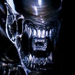

Forums galactiques > Taverne galactique : lieu de discussion informel > Un nouveau
Pages : 1
| seyo  27/04 ETU 20:21 | Bonjour à tous, A vrai dire, je ne suis pas si nouveau que ça, étant donné que ça fait environ un mois que le peuple de ma planéte mére m'a élu en tant que commandant. Je n'ai que survolé les autres forums, préferant aller à l'essentiel, plutot qu'avoir tout les détails. Veuillez m'en excuser, mais d'un coté, je préfere laisser la partie politique aux autres (pas IRL biensur). Je pense etre assez bien tombé, car j'ai eu le temps de me faire au jeu (je suis un ancien joueur de "Planetarion", s'adapter fut assez facile à vrai dire), et le reset tombe bientot. Je n'ai volontairement pas decouvert l'hyperfuson, de peur de voir mon petit coin paradisiaque envahi par les touristes, ou colons. J'avais deja de quoi faire, un inactif, un qui allait arreter de jouer par manque de temps (encore merci, Krésus), et un muet (enfin, qui n'est pas tres diplomate on va dire) que j'ai laissé prospérer un peu dans son coin (profites, si tu lis, je m'occuperais de toi avant le reset ;)) Donc voila, je reste caché dans la 999, mais on devrais se rencontrer dans la beta 3. D'avance, enchanté de faire votre connaissance. Cordialement, SEYO ps: Veuillez également excuser le HRP présent dans ce message. |
Krokeur 27/04 ETU 20:25  | Salutations, bien quelles soient tardives, commandant Seyo! Bonne route dans la Beta3 |
bartarengis 27/04 ETU 20:39 | salutation a vous commandant. |
Necromanger 27/04 ETU 20:53 | Bonjour cher commandant j'espère pour vous que vous ferez bon jeu!!!! |
wima 27/04 ETU 21:04 | Bonsoir Commandant et bonnes aventures galactiques... |
Lord Stein27/04 ETU 21:08 | Bienvenue commandant. Passez de bonnes batailles. |
Slipknot17 27/04 ETU 21:09 | Bienvenu à et puisse votre chemin évitez les batailles. HRP: pas mal votre message de bienvenue Stein. |
Lord Stein27/04 ETU 21:11 | Je suis tout fier de moi. Que d'émotions! |
TICOJONA 27/04 ETU 22:16 | bonjour à vous commandant et ne faites pas toujours attention à l'humour sulfureux de certain je suis passé par là hier, mais dans l'ensemble ce sont des commandants très respectueux mis à part certain que tu apprendras à connaitre très vite. n'hésite pas à demander de l'aide et va voir sur le forum certain commandants très généreux donnent des ressources aux débutants comme nous. merci encore à tous ceux qui m'on aidé. PS: Méfie toi des fautes d'orthographe car le commandant Wima veille lol (je l'adore hihihi) |
juninhio27/04 ETU 23:43 | bonjour commandant, bonne chance à vous j'éspère que vous passerai un bon séjour sur apocalipsis commandant wima, ai-je fait une faute ??? lol hiihihihi |
wima28/04 ETU 00:01 | Plus d'une... |
juninhio28/04 ETU 00:02 | cité les moi SVP hihihihihi |
seyo28/04 ETU 00:03 | Merci de votre accueil Commandants. J'en profite pour poser une petite question: Comment se passent les Coalitions? Des détails sont ils disponible quelque part? (j'ai cru comprendre que les ultrèmes étaient pas appréciés?) Car d'un coté, je n'ai pas non plus envie de rester tout seul dans mon coin... Merci de vos conseils à ce sujet. ps: 2 fautes Juni: "passerez" et "apocalypsis" ;) |
juninhio28/04 ETU 00:05 | d'accord je suis pas très bon en français pardon commandant wima |
TICOJONA28/04 ETU 10:23 | Juninhio tu ferais bien de t'appliquer un peu car moi aussi je veille pour les raisons que tu connais lol Comandant Wima ne vous sentez pas agressé ce ne sont que de petits pics amicals salutation |
juninhio28/04 ETU 11:28 | oh .... TICOJONA ne seriez vous pas en train de me contredire ??? |
juninhio28/04 ETU 11:30 | oui ne vous en faîte pas commandant wima je rigole juninhio PS : et là ai-je fait une faute ( on dirait mon professeur de français ) lol |
Pages : 1
Forums galactiques > Taverne galactique : lieu de discussion informel > Un nouveau